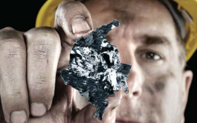
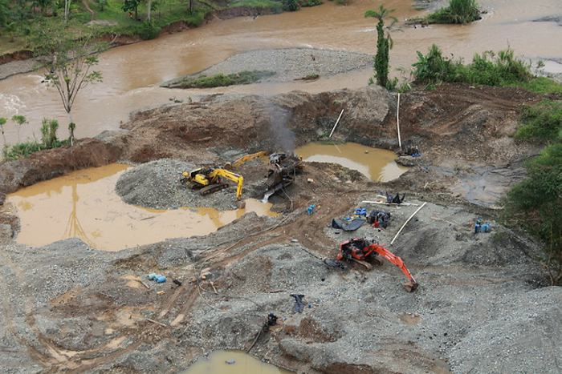

| Impacto del coltán en Colombia | Desarrollo sostenible y ambiental | Explotación de oro de aluvión | Consecuencias de la minería en Colombia |
En Colombia se habla del oro y la minería como problema fundamental, pero también como base económica de la región, este trabajo es dado en condiciones muy complicadas, y a los trabajadores les molesta que el mismo gobierno no tome eso en cuenta y le entregue territorio Colombiano a compañías multinacionales Como la Quedada, lo que impide el desarrollo y las oportunidades de los Colombianos en todo el país, no solo en el trabajo sino también para las personas más jóvenes en el estudio y aunque esto parezca poco a los ojos de muchos afecta en toda la nación no solo en el pueblo o departamento como se podría llegar a pensar. Otra de las grandes consecuencias que nos deja la minería es en la naturaleza, pues en un año caen alrededor de 500 toneladas de carbón en el mar, y esto posteriormente afecta la calidad de vida de las personas que viven cerca de estos lugares contaminados.

